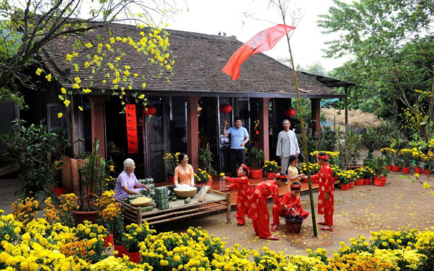
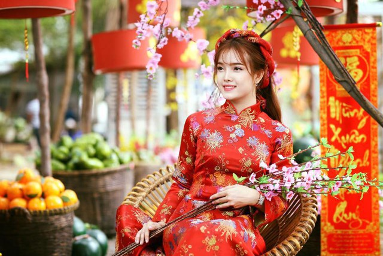

Tết Nguyên đán (hay còn được gọi là Tết Cả, Tết Ta, Tết Âm lịch, Tết Cổ truyền hay đơn giản là Tết) - Tết lớn nhất trong năm, diễn ra vào mùa xuân, thời điểm kết thúc một chu kỳ bốn mùa Xuân - Hạ - Thu - Đông để bước vào một chu kỳ mới, một khởi đầu mới, nên luôn được gửi gắm nhiều ước vọng.
Vậy Tết nghĩa là gì? Tết bắt nguồn từ đâu? Đó là những câu hỏi mà nhiều học giả đã dày công tìm câu trả lời qua nhiều thế hệ. Tết là sự bắt đầu, là khởi nguồn. Ý nghĩa của Tết bao trùm lên mọi mơ ước về những điều tốt đẹp, những điều lành và may mắn…
Tết, khởi đầu của một năm, một tháng, một mùa, một chu kỳ sản xuất nông nghiệp mới. Tết cũng là lễ hội lớn nhất, quan trọng nhất của người Việt trong năm và ai cũng dành những điều tốt đẹp nhất cho Tết.
Trong sử sách, ở mỗi thời, các nhà nghiên cứu đều phân tích và cho thấy những yếu tố gì dẫn đến việc hình thành nên cái Tết như ngày nay.
GS.TS, nhà nghiên cứu Nguyễn Văn Huyên viết trong tạp chí Indochine số 75 và 75 ngày 12/12/1942, được MaiHaBooks dịch và in lại trong cuốn "Tết Việt Nam xưa" rằng, Tết theo lịch âm ở châu Á là một ngày lễ được người Việt tổ chức long trọng nhất trong năm.
Theo lịch âm dựa trên sự vận động của mặt trăng, mỗi tháng bắt đầu vào một ngày trăng mới. Và năm mới bắt đầu vào ngày trăng xuất hiện sau khi mặt trời ló rạng khỏi chí tuyến nam, dấu hiệu cuối cùng trong ba dấu hiệu mùa đông.
Tết, vì thế mà theo sự diễn biến của cả mặt trăng và mặt trời. Tết mở ra mùa xuân và luôn rơi vào khoảng từ 10 ngày cuối cùng của tháng Một đến ngày thứ ba của tháng Hai.
Tết này gọi là "tiết Nguyên đán", "thời kỳ rạng đông bắt đầu". Ngày này là ngày bắt đầu của năm, của tháng và của mùa, vì vậy, đó là buổi sáng thiêng liêng nhất. Nó báo trước những sự kiện tốt lành của mặt trăng sẽ xảy ra sau đó.
Nhà sử học Trần Văn Giáp trong bài viết "Nguồn gốc Tết Nguyên đán ở Việt Nam" năm 1963 (Trung tâm Lưu trữ Quốc gia I giới thiệu) cũng phân tích, "Tết" hiểu theo gốc chữ Hán là chữ "Tiết", nghĩa là "thời tiết" tức là "Bát tiết" và "khí tiết".
"Bát tiết" theo chữ Hán là Tám ngày thay đổi khí hậu (khí tiết) trong bốn mùa: Xuân, Hạ, Thu, Đông, gồm: Lập Xuân, Lập Hạ, Lập Thu, Lập Đông, Xuân phân, Thu phân, Hạ chí và Đông chí.
Trong tiếng Việt, Tết hay tiết là dịp hội hè, cũng là dịp lễ vui vẻ, bát tiết của Việt Nam không phải là Lập xuân, Xuân phân... mà là những ngày Tết có cúng lễ, gồm: Nguyên đán, Thượng nguyên, Hàn thực, Đoan ngọ, Trung nguyên, Trung thu, Thường tân, Đông chí.
Trong tám ngày Tết ấy, Nguyên đán là ngày tết đầu năm, cho nên gọi là Tết Cả, cùng với các tết khác, ở các đình, chùa, đền, miếu đều có cúng lễ linh đình, ở các nhà thờ họ, các nhà riêng đều có làm cỗ bàn cúng lễ và hội họp vui vẻ.
Hai chữ "Nguyên đán" là một danh từ chữ Hán, theo sách cổ, sau thời nguyên thủy người ta đã biết định ra thế nào là một năm, thì lấy ngày thứ nhất của một năm gọi là Nguyên đán. "Nguyên" nghĩa là đầu; "đán" nghĩa là buổi sớm; "Nguyên đán" là buổi sớm đầu năm…
Theo nhà nghiên cứu Phan Cẩm Thượng phân tích trong cuốn "Tập tục đời người", người Việt sử dụng nông lịch hay lịch âm được tính theo vòng quay của mặt trăng chung quanh trái đất, nhưng cũng tính được 24 tiết khí của trái đất với mặt trời, với 4 điểm gốc Xuân phân, Thu phân, Đông chí, Hạ chí.
Tết bắt đầu từ ngày đầu tiên của tháng Giêng, khởi đầu của một năm mới, cũng là khởi đầu của một chu kỳ canh tác mới.
Còn trong cuốn "Bắc kỳ tạp lục" của tác giả Henri Emmanuel Souvignet viết: "Tết Nguyên đán hay Tết đầu năm bắt đầu với lễ tế giao thừa lúc nửa đêm, vào đúng thời khắc năm cũ qua đi (giao) và năm mới tới (thừa), chính vì thế mà có cái tên Tế giao thừa để gọi lễ này".
Còn về nguồn gốc Tết ở Việt Nam bắt đầu từ bao giờ, cho đến nay vẫn chưa có tài liệu nào xác định.
Theo nghiên cứu của nhà sử học Trần Văn Giáp, ngày "Tết Nguyên đán" ở Việt Nam đã có từ đầu thế kỷ thứ nhất sau Công nguyên. Nguồn gốc chữ Tết cũng như nghĩa chữ "Tết Nguyên đán" cũng được phổ biến từ thời đó.
Còn theo sự tích "Bánh chưng, bánh dày", Tết Nguyên đán có thể đã xuất hiện từ thời các vua Hùng, với truyền thuyết về chàng Lang Liêu và bánh chưng.
Chính vì mang tính chất sự khởi đầu của một giai đoạn gieo trồng mới, một tháng mới, mùa mới, năm mới, cho nên Tết có ý nghĩa rất lớn trong đời sống của người Việt.
Với mỗi người Việt, Tết là dịp tụ họp, đoàn viên gia đình. Con cháu đi làm ăn xa, dù bận đến mấy cũng cố gắng về ăn Tết với gia đình. Mọi người ai nấy đều cố hoàn thành công việc, giải quyết công nợ xong hết trước Tết, để có thể đón một năm mới thanh thản, an vui.
Nhà nghiên cứu Nguyễn Văn Huyên viết: "Ngày này là lúc khởi đầu của một năm, tháng và mùa. Nó đứng đầu chuỗi nhịp điệu các thời kỳ. Vì thế, sáng hôm đó là buổi sáng linh thiêng nhất. Nó là điềm báo trước các sự kiện tốt lành của các tháng âm lịch tiếp theo. Và tất cả các cử chỉ ta làm trong những giờ đầu tiên này đều có hiệu lực của một đạo bùa quý báu".
Chính vì thế, "người ta thổi ống tiêu để đoán tính chất điều kiện khí hậu trong năm; người ta uống rượu để xua đi các hơi lạnh và tử khí, người ta đốt vàng mã để xua đuổi hiểm họa binh đao; người ta giặt quần áo để tránh mọi tật bệnh và sự khốn khó…
Trong các công sở, người ta cất triện vào hòm khóa và sự giải quyết việc công được ngừng ngay từ hôm 25 tháng Chạp, chỉ tiếp tục lại một cách long trọng vào ngày 25 tháng Giêng âm lịch năm mới".
Cụ Nguyễn Văn Huyên cũng nhấn mạnh vào ý nghĩa quan trọng của Tết: "Dù thế nào đi nữa, nếu không phải tất cả các truyền thống cổ đều còn được tôn trọng, thì trong dịp lễ này, từ bắc chí nam, cả nước đều hoan hỉ.
Chẳng biến cố nào của thế giới bên ngoài có thể cướp đi của người nghèo nhất cũng như giàu nhất niềm vui trong lòng này và sự thỏa mãn được ăn Tết một cách xứng đáng trước bàn thờ thần linh trong nhà hoặc giữa những người cùng xứ sở.
Dân thành thị cố gắng làm ngơ để quên đi những điều phiền toái mà các bức điện từ nước ngoài đưa đến và ăn Tết thảnh thơi khỏi mọi lo toan trước mắt. Nhà nông, với đời sống hằng ngày vất vả cơ cực, chẳng biết gì đến nghỉ ngơi hằng tuần, ngừng mọi công việc vào ngày đầu năm. Cả nước bị cuốn hút vào một tình cảm đồng tâm nhất trí bởi một sức mạnh vô hình…
Bản thân hoàng đế cũng phải đánh dấu, bằng những nghi lễ được quy định cẩn thận, sự kiện tạo cho ngài một năm mới để thực hiện thiên mệnh của mình".
Học giả Nguyễn Văn Vĩnh viết trên tạp chí Indochine số 177 (ngày 20/1/1944 - "Tết Việt Nam xưa") về ngày Tết: "Bất chấp những lệnh cấm của chính quyền, người An Nam vẫn tổ chức các lễ hội theo âm lịch và đặc biệt là ngày đầu năm mới - một ngày lễ lớn đầy chất thơ và mang tính truyền thống.
Trong ba ngày lễ ấy, mọi người được thoải mái vui cười, bỏ qua những lo lắng phiền muộn, những mối hận thù cá nhân. Ba ngày tĩnh tâm để gợi nhớ tổ tiên, để cho các linh hồn hộ mệnh của họ trở về giữa những người đang sống.
Mọi người chỉ xem các chương trình vui nhộn và nghĩ đến những điều hạnh phúc, ăn no uống say, thưởng thức những món ngon trong không khí trang trọng, khoác lên mình những bộ quần áo đẹp nhất, nói những điều đẹp đẽ nhất, trao nhau những điều ước và những lời chúc tụng tốt đẹp.
Đó là một sự nghỉ ngơi, một hiệp định đình chiến, chấm dứt mọi tranh đấu và ganh đua, một giấc mơ hạnh phúc lớn lao…"
Tết, là sự khởi đầu. Trở về với Tết, cũng là trở về với sự khởi đầu. Đó là ý nghĩa lớn nhất của Tết, mà mỗi lần xuân về, người Việt lại cùng nhau hướng tới.
Tết là trở về
Xã hội hiện đại, đã có rất nhiều thay đổi, kể cả trong cách đón Tết cũng như những thực hành trong dịp Tết. Thế nhưng, có một điều không bao giờ thay đổi, đó là tâm lý hướng về những giá trị truyền thống của người Việt trong dịp Tết, dù ở thế hệ nào, độ tuổi nào. Bởi vì trên hết, bản thân Tết đã là một sự trở về với cội nguồn.
Không phải ngẫu nhiên mà mỗi dịp Tết đến, người ta thường hướng tới sự đoàn tụ, sum vầy. Người làm ăn, người đi học xa, dù bận bịu, nhiều việc thế nào cũng đều cố gắng về nhà vào dịp Tết.
Tết không có định nghĩa cụ thể, nhưng trong tâm trí mỗi người Việt đều là những buổi sum họp gia đình, cả nhà quây quần tụ họp trong những thời khắc đầu tiên của năm mới. Đó là định nghĩa "không thành lời" nhưng luôn rõ nét nhất mỗi khi nhắc đến Tết.
Với mỗi gia đình, dù là các gia đình trẻ, hiện đại, dù có lựa chọn những cách đón Tết, ăn Tết, thực hành Tết đơn giản và giảm các thủ tục nhiều hơn so với các thời trước, nhưng vẫn luôn giữ một giá trị chung, đó là hướng về truyền thống.
Tết Nguyên đán chính thức trở thành ngày nghỉ lễ của Liên Hợp Quốc
Trong phiên họp cuối cùng của năm 2023, Đại Hội đồng Liên Hợp Quốc đã thông qua nghị quyết lần đầu tiên công nhận Tết Nguyên đán là ngày nghỉ lễ hằng năm của Liên Hợp Quốc.
Nghị quyết của Đại Hội đồng Liên Hợp Quốc nhấn mạnh Tết Nguyên đán là ngày lễ ở nhiều quốc gia thành viên, khuyến khích các cơ quan Liên Hợp Quốc không tổ chức họp vào ngày đầu tiên của năm mới âm lịch.
Việc Đại hội đồng Liên Hợp Quốc thông qua Nghị quyết trên ngay trước thềm Năm mới Giáp Thìn 2024 không chỉ có nghĩa quan trọng với các nước chính thức đón mừng Tết Nguyên đán mà còn là tin vui cho gần 2 tỷ người dân trên toàn thế giới coi năm mới âm lịch là dịp lễ quan trọng nhất trong năm.
Đây là sự công nhận của cộng đồng quốc tế đối với văn hóa cổ truyền Á Đông, là kết quả của quá trình phối hợp vận động tại Liên Hợp Quốc, trong đó Việt Nam là một trong 12 nước tham gia thư chung gửi lãnh đạo Liên Hợp Quốc hồi tháng 8/2023 và tích cực thúc đẩy việc này.
Nguồn: https://xaydungchinhsach.chinhphu.vn/nguon-goc-y-nghia-tet-nguyen-dan-cua-nguoi-viet-119230121183831146.htm
← Quay lại trang chủ